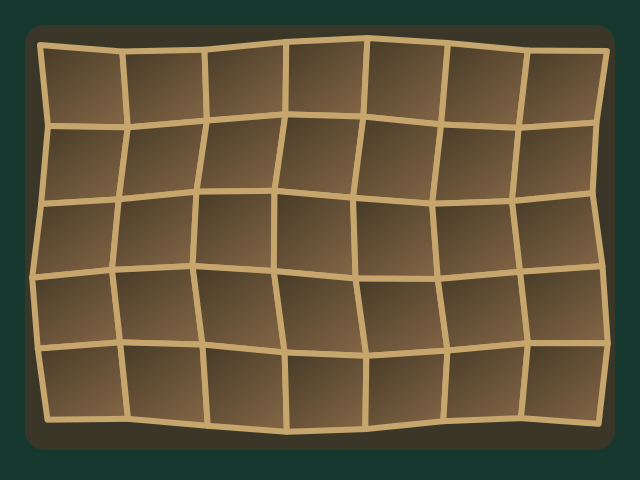
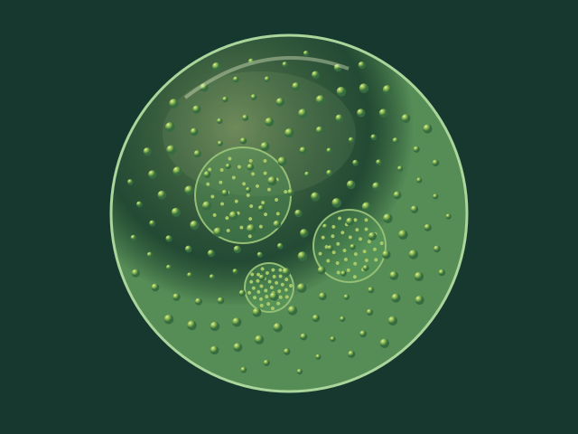
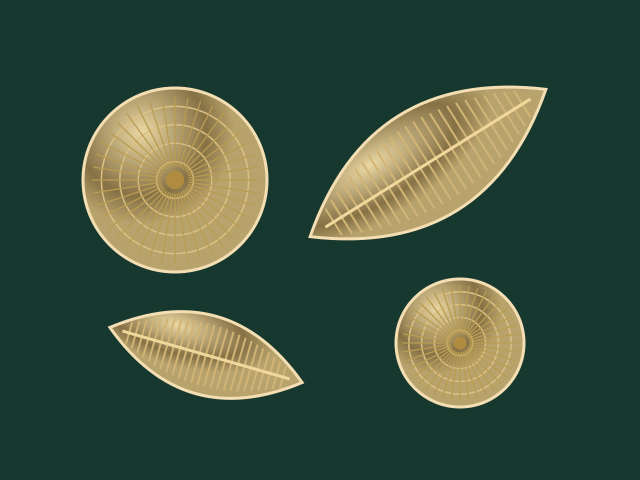

解剖顯微鏡
適合較大、較厚或不透明的標本。看見正立、具有立體感的影像，例如昆蟲與葉片表面。
生物科學 · 第一章：生命科學緒論
放大不只是變大：視野、亮度與移動方向，也會改變你看到的世界。
小單元二 · 四個主分頁 · 全螢幕操作
適合較大、較厚或不透明的標本。看見正立、具有立體感的影像，例如昆蟲與葉片表面。
目鏡與物鏡共同放大，通常觀察薄、能透光的標本。影像上下、左右都與標本相反，相當於旋轉半圈。
使用電子束而不是可見光，可以觀察更細微的構造；標本需要特殊處理，不是課堂中觀察活體池水的工具。
依序挑戰三個觀察目標，先判斷標本的厚薄、是否透光，以及要看表面還是細微構造。

軟木薄片中的小室，讓虎克使用了「細胞」這個名稱。
他主要看見死細胞留下的細胞壁，不是活細胞的完整內部構造。
原創教學示意，非虎克原圖或真實顯微照片。
想一想：蕨類葉背的孢子囊堆、昆蟲的足，哪一種工具比較適合觀察？

有些綠藻形成群體。這個球形示意中，許多小細胞排列在群體表面，內部可見較小的子群體。
觀察重點：大球是一個群體，不是一個巨大細胞。

矽藻有含矽的細胞壁，外形與紋路多樣，常呈黃褐色。可以比較圓盤形與細長舟形。
不能只靠顏色辨認；也要觀察外形與構造。
總放大倍率＝目鏡倍率 × 物鏡倍率。本模型目鏡固定 10 倍；換物鏡時觀察同一份標本。
目鏡中的視野
教學示意，非真實顯微照片。視野直徑依倍率反比換算；亮度與模糊程度只呈現趨勢，並非儀器校正數據。
先在紙上預測，再選「電子數字」驗證。注意這是整張標本轉半圈，不是只把每個字各自倒過來；左右順序也會改變。
拖曳下方玻片，或使用方向按鈕。按鈕表示玻片的實際移動方向。
目鏡中的倒像
小生物會自行游動。拖曳玻片不是拖曳生物；觀察目鏡中的反方向移動，再調整玻片。
目鏡中的小生物
以概念性水中小生物呈現倒像與追蹤，不代表特定物種、真實大小或實際游速。
內容依老師《生物 第一章》講義整理。開場為 AI 生成的藝術化科學插圖；標本圖與視野為原創教學示意，非真實顯微照片，也不提供物種鑑定或比例尺。不同標本圖之間不可直接比較真實大小。